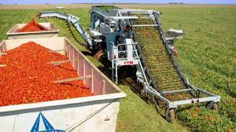

TOMATO
Tomato is originated in Peru of South America. It is an important commercial vegetable crop of India. It is the second most important crop of the world after potato. Fruits are eaten raw or in cooked form. It is a rich source of vitamin A, C, potassium, and minerals. It is used in soup, juice, ketchup, and powder. The major tomato-producing states are Bihar, Karnataka, Uttar Pradesh, Orissa, Maharashtra, Andhra Pradesh, Madhya Pradesh, and West Bengal. In Punjab state, Amritsar, Ropar, Jalandhar, Hoshiarpur are tomato-growing districts.
CLIMATE
SOIL
It can be grown in varied types of soil ranging from sandy loam to clay, black soil, and red soil having proper drainage. It gives the best result when grown under well-drained sandy soil with high organic content. For good growth, the pH of the soil should be 7-8.5. It can tolerate moderately acidic and saline soil. Avoid cultivation in highly acidic soils. For early crops, light soil is beneficial where for heavy yields clay loam and silt-loam soils are useful.
VARIETIES & YIELD:
Keekruth: Plant height is about 100cm. Ready to harvest in 136 days. Fruits are medium to large size, round shape, deep red color.
HS 101: Suitable for growing in north India during winter conditions. Plants are dwarf. Fruits are round and medium-sized and juicy. Fruits are borne in clusters. It is resistant to Tomato Leaf Curl Virus.
HS 102: Early maturing variety. Fruits are small to medium in size, round, and juicy.
LAND PREPARATION:
MANUAL PLOUGHING

For tomato plantation, it requires well-pulverized and leveled soil. To bring the soil to fine tilth, plow the land for 4-5 times, then plank it to make the soil level. At the time of the last plowing, add well-decomposed cow dung and Carbofuron@5kg or Neem cake@8kg per acre should be applied. Transplantation of tomato is done on raised beds. Prepare raised beds of 80-90cm width. To destroy harmful soil-borne pathogens, pests, and organisms, soil solarization is carried out. It can be done by using a transparent plastic film as mulch. This sheet absorbs radiation and thus increases soil temperature and kills pathogens.
MANAGEMENT & TRANSPLANTING:
Do solarization for one month before sowing. Sow tomato seeds on raised beds of 80-90cm width and of convenient length. After sowing, cover the bed with mulch and irrigate the bed with Rose-Can daily in the morning. To protect the crop from a virus attack, cover the nursery bed with fine nylon net.
10-15 days after transplanting, spray 19:19:19 along with micronutrients@2.5 to 3gm/Ltr of water. To make plants healthier and stronger and to harden seedlings against transplanting shock, take a spray of Lihocin@1ml/Ltr water at 20 days after sowing. Damping Off damages the crop to a great extent, to prevent the crop from it avoid overcrowding of seedlings and keep the soil wet. If wilting is observed, do drenching of Metalaxyl@2.5gm/Ltr water, 2-3 times till plants are ready for transplantation.
Seedlings are ready for transplantation 25 to 30 days after sowing with 3-4 leaves. In case if seedlings' age is more than 30 days, transplant it after de-topping. Water seedling beds 24 hours before transplanting so that seedlings can be easily uprooted and be turgid at transplanting time.
To protect the crop from bacterial wilt, dip seedlings in 100ppm Streptocycline solution for 5 minutes before transplanting.
SOWING
Time of Sowing
For northern states, tomato cultivation for the spring season is done in late November and transplanted in the second fortnight of January. For the autumn crop, sowing is done in July - August and transplanted in August - September. In hilly areas, sowing is done in March-April, and transplantation is done in April-May.
Spacing
Depending upon the variety used and its growth habit, use spacing of 60x30cm or 75x60cm or 75x75cm. In Punjab, for dwarf variety, use spacing of 75cm x 30cm and for the rainy season, use spacing of 120-150 x 30cm.
Sowing Depth
In the nursery, sow seeds at a depth of 4cm and then cover with soil.
Method of Sowing
Transplanting seedlings in the main field.
SEED:
SEED RATE
Use a seed rate of 100gm for preparing seedlings for sowing in one acre of land.
SEED TREATMENT
To protect the crop from soil-borne diseases and pests, before sowing, do seed treatment with Thiram@3gm or Carbendazim @ 3gm of seeds. After chemical treatment, treat seeds with Trichoderma@5gm/kg of seeds. Keep it in the shade and use it for sowing.

FERTILIZER REQUIREMENT:

Tomato plants require a balanced fertilizer application. Apply well-rotted compost or organic manure before planting. During the growing season, apply fertilizers like Nitrogen, Phosphorus, and Potassium in the ratio of 60:80:40 kg per hectare at different growth stages to ensure healthy growth and optimum yield.
IRRIGATION:
DRIP IRRIGATION SYSTEM

Drip irrigation is an efficient method to provide water to tomato plants. It ensures precise and controlled water supply directly to the root zone, conserving water and promoting better growth. Regular irrigation is crucial, especially during flowering and fruiting stages, to prevent blossom end rot and ensure uniform fruit development.
PLANT PROTECTION:

Tomato plants are susceptible to various pests and diseases. Implement integrated pest management (IPM) practices to control pests like aphids, whiteflies, and tomato hornworms. Additionally, monitor the plants for signs of diseases such as early blight and late blight. Proper crop rotation, sanitation, and timely application of organic or chemical remedies can help protect the plants.
HARVESTING:
SHEARING
Pruning or shearing the tomato plants helps in controlling the plant's size and shape. It allows better air circulation and sunlight penetration, reducing the risk of diseases. Shearing also promotes the growth of healthy fruits and simplifies harvesting.
MACHINE HARVESTING

Modern agriculture employs machines for efficient harvesting. Machines equipped with delicate grips collect ripe tomatoes without damaging the fruits. Machine harvesting saves time and labor, making it a popular choice for large-scale tomato farms.